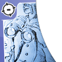

Mustang
Quando hai in gioco un Mustang sei "visto" dagli altri ad una
distanza aumentata di 1, cosicché essi avranno bisogno di
un'arma a raggio più lungo per spararti.
Tu, invece, continui a vedere gli altri alla distanza normale.

Barile
Questa carta ti consente di "estrarre!" quando sei
il bersaglio di un

:
se estrai una carta con il tag

,
sei Mancato! [

], in caso contrario
non succede niente.
Quando un giocatore ti spara, il barile ti fornisce un'ulteriore possibilità di difesa prima di
rispondere normalmente.

Prigione
Gioca questa carta su qualsiasi giocatore, eccetto lo Sceriffo, per metterlo in prigione.
Se sei in prigione devi "estrarre!" prima dell'inizio del tuo turno:
se esce una carta con il tag
, evadi di
prigione e giochi normalmente, in caso contrario salti il turno.

Dinamite
Gioca la Dinamite mettendola davanti a te, dove resterà innocua per un intero giro.
Quando inizi il tuo prossimo turno, ed hai quindi la Dinamite già in gioco, devi
"estrarre!": se esce una carta con il tag

, la dinamite
esplode e tu perdi 3 punti vita, in caso contrario la Dinamite passa al prossimo giocatore.

Mirino
Quando hai in gioco un Mirino "vedi" gli altri giocatori ad una distanza
diminuita di 1. Essa influenza tutte le carte che si basano sulla distanza,
incluse le tue armi.
Gli altri, invece, continuano a vederti alla distanza normale!

Schofield
Quest'arma estende la gittata di fuoco a 2.
Puoi avere una sola arma di fronte a te: per usarne una nuova la precedente va scartata.

Remington
Quest'arma estende la gittata di fuoco a 3.
Puoi avere una sola arma di fronte a te: per usarne una nuova la precedente va scartata.

Rev. Carabine
Quest'arma estende la gittata di fuoco a 4.
Puoi avere una sola arma di fronte a te: per usarne una nuova la precedente va scartata.

Winchester
Quest'arma estende la gittata di fuoco a 5.
Puoi avere una sola arma di fronte a te: per usarne una nuova la precedente va scartata.

Volcanic
Con questa arma puoi giocare un numero qualsiasi di carte BANG! nel tuo turno.
Queste possono essere dirette allo stesso giocatore oppure a giocatori differenti,
ma solo a distanza 1.

Riparo (DODGE CITY)
Stesso effetto di MUSTANG, ma puoi tenerle entrambe!

Binocolo (DODGE CITY)
Stesso effetto di MIRINO, ma puoi tenerle entrambe!